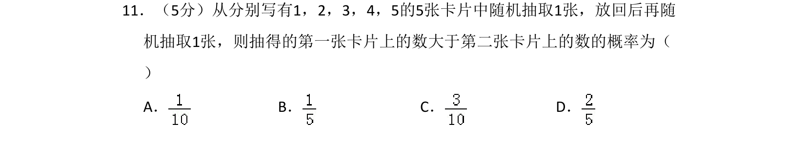
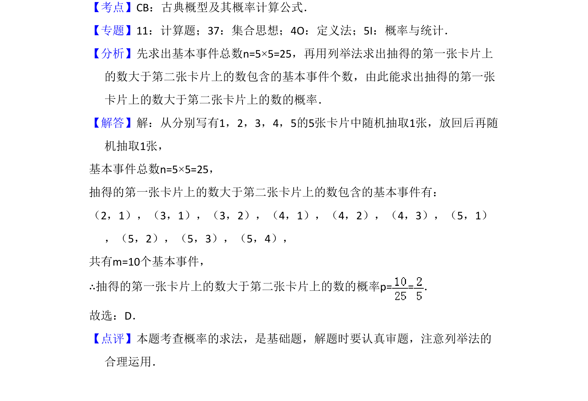

考点：古典概型 概率计算 列举法

从放回抽取的卡片中计算第一张数字大于第二张的概率，考查古典概型及列举法。

📄 原 PDF 第 8 页：
素材/真题/吉林/2008-2024·（吉林）数学高考真题/2017年高考数学试卷（文）（新课标Ⅱ）（解析卷）.pdf
11．（5分）从分别写有1，2，3，4，5的5张卡片中随机抽取1张，放回后再随 机抽取1张，则抽得的第一张卡片上的数大于第二张卡片上的数的概率为（ ） A．B．C．D．
【考点】CB：古典概型及其概率计算公式．菁优网版权所有 【专题】11：计算题；37：集合思想；4O：定义法；5I：概率与统计． 【分析】先求出基本事件总数n=5×5=25，再用列举法求出抽得的第一张卡片上 的数大于第二张卡片上的数包含的基本事件个数，由此能求出抽得的第一张 卡片上的数大于第二张卡片上的数的概率． 【解答】解：从分别写有1，2，3，4，5的5张卡片中随机抽取1张，放回后再随 机抽取1张， 基本事件总数n=5×5=25， 抽得的第一张卡片上的数大于第二张卡片上的数包含的基本事件有： （2，1），（3，1），（3，2），（4，1），（4，2），（4，3），（5，1） ，（5，2），（5，3），（5，4）， 共有m=10个基本事件， ∴抽得的第一张卡片上的数大于第二张卡片上的数的概率p= =． 故选：D． 【点评】本题考查概率的求法，是基础题，解题时要认真审题，注意列举法的 合理运用．